پروفیل آرارات
پروفیل استاندارد پنجرههای چندجداره UPVC
@araratupvcاز ماده اولیه تا پروفیل آماده.
شرکت پروفیل صنعت آرارات در سال ۱۳۸۶ با هدف تولید پروفیلهای درب و پنجره یو پی وی سی (UPVC) بر اساس استانداردهای بینالمللی صنعت پلیمر فعالیت خود را آغاز کرد. این شرکت از بدو تأسیس همواره به کیفیت و نوآوری در تولید محصولات خود توجه ویژهای داشته و در راستای رسیدن به این هدف، تلاشهای بیوقفهای در زمینه بهکارگیری ماشینآلات مدرن و استفاده از تکنولوژیهای پیشرفته کشورهای معتبر صنعتی جهان انجام داده است.
شرکت پروفیل صنعت آرارات با بهرهمندی از فناوری روز و ماشینآلات پیشرفته آلمانی و اتریشی و استفاده از مواد اولیه مرغوب و باکیفیت، توانسته است محصولاتی را تولید کند که علاوه بر مطابقت با استانداردهای بینالمللی، از کیفیت بالای خود در بازارهای داخلی و خارجی برخوردار باشد. این محصولات، تاییدیههای معتبر از مراکز تحقیقاتی اروپایی و ایرانی، از جمله وزارت علوم، تحقیقات و فناوری کشور را نیز به دست آوردهاند.
مهمترین ویژگی محصولات شرکت پروفیل صنعت آرارات، رعایت استانداردهای خاص و در نظر گرفتن نیازهای اقلیمی و جغرافیایی کشور ایران و کشورهای همجوار است. در فرآیند طراحی و تولید این پروفیلها، شرایط آب و هوایی مناطق مختلف ایران و کشورهای همسایه به دقت مورد بررسی قرار گرفته است تا محصولات بتوانند در برابر شرایط جوی متفاوت از جمله تغییرات دمایی، رطوبت، گرد و غبار و اشعه ماوراء بنفش و ... مقاوم باشند. این دقت در طراحی و تولید باعث شده است که پروفیلهای تولیدی شرکت آرارات از نظر کیفیت و طول عمر در شرایط مختلف محیطی عملکرد فوقالعادهای داشته باشند.
شرکت پروفیل صنعت آرارات با پشتوانه تجربیات طولانی در صنعت پلیمر و با تکیه بر پرسنل متخصص و مجرب خود در تمامی مراحل تولید، از طراحی و توسعه تا تولید انبوه، به مشتریان خود این اطمینان را میدهد که محصولات آنها از کیفیت بینظیری برخوردار بوده و در برابر چالشهای محیطی و زمان، بهخوبی دوام خواهند آورد.
ما در شرکت پروفیل صنعت آرارات با توکل به خداوند منان، امیدواریم با رعایت دقیق اصول فنی، نوآوری در تولید و توجه به نیازهای روز بازار، اعتماد مصرفکنندگان محترم را جلب کرده و نقش مؤثری در ارتقاء صنعت ساخت و ساز کشور عزیزمان ایران ایفا نماییم. هدف ما، ارتقاء کیفیت زندگی از طریق تأمین محصولاتی با استانداردهای جهانی و تأمین رضایت مشتریان محترم است.
ده محصول، چهار برند. برای مشاهدهٔ صفحهٔ اینستاگرام هر برند، روی نام برند موردنظر کلیک کنید.
پروفیل استاندارد پنجرههای چندجداره UPVC
@araratupvcپروفیل استاندارد پنجرههای چندجداره UPVC
@huber.mannپروفیل پنجرههای دوجداره UPVC
@delwinupvc
پروفیل پنجرههای چندجداره UPVC
@ada_upvcده پروفیل اصلی درب و پنجره با نقشه مقطع و ابعاد. برای اطلاع از قیمت روز، لطفاً تماس بگیرید.
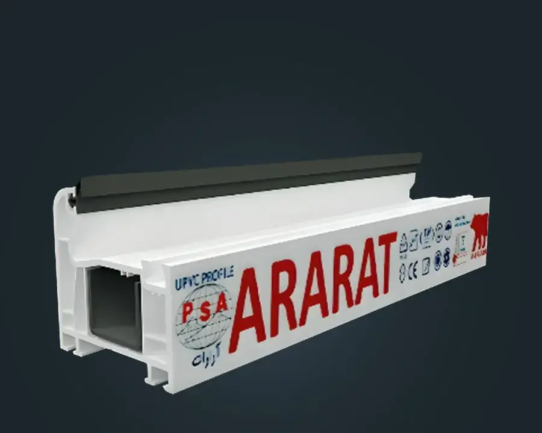

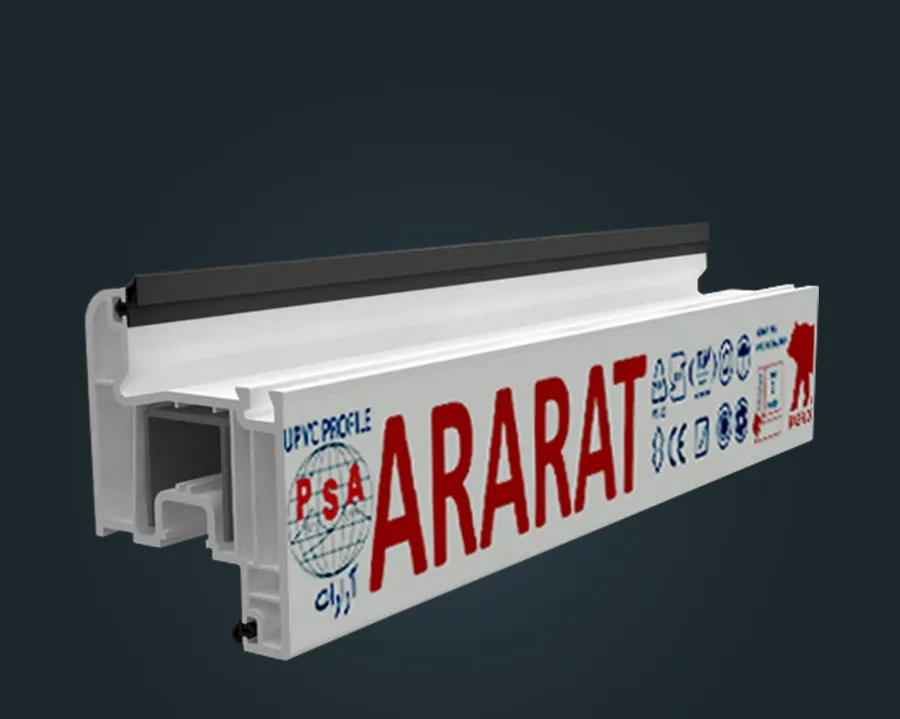

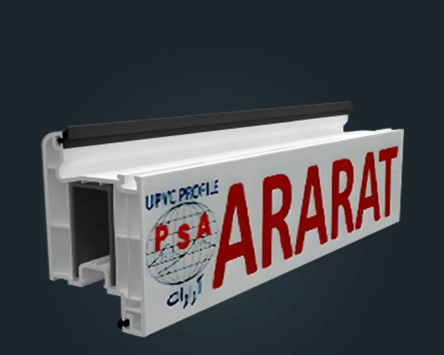

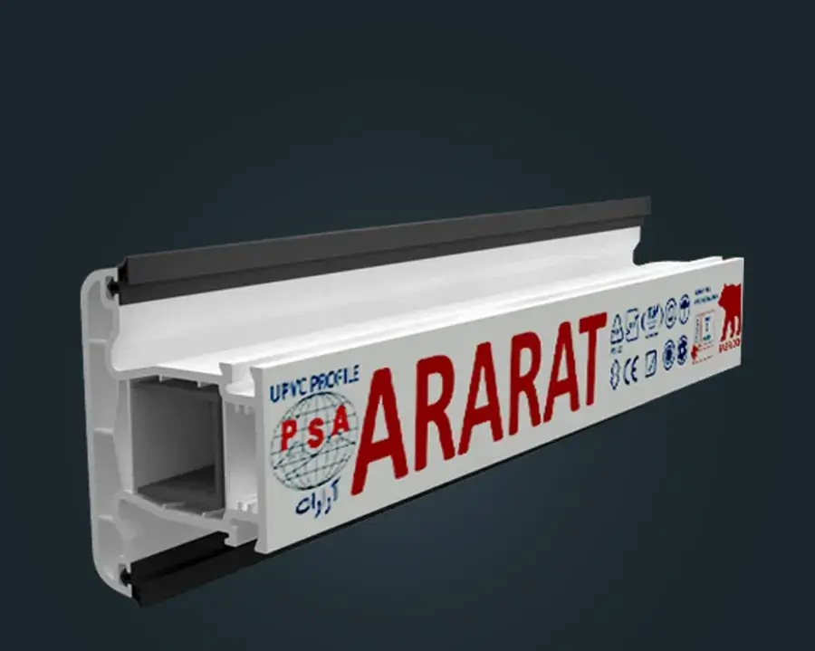
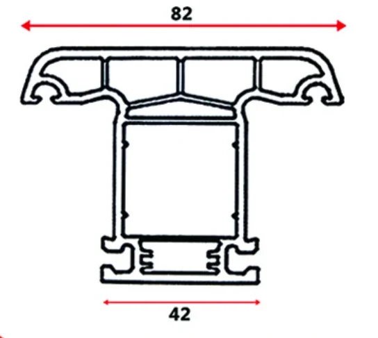
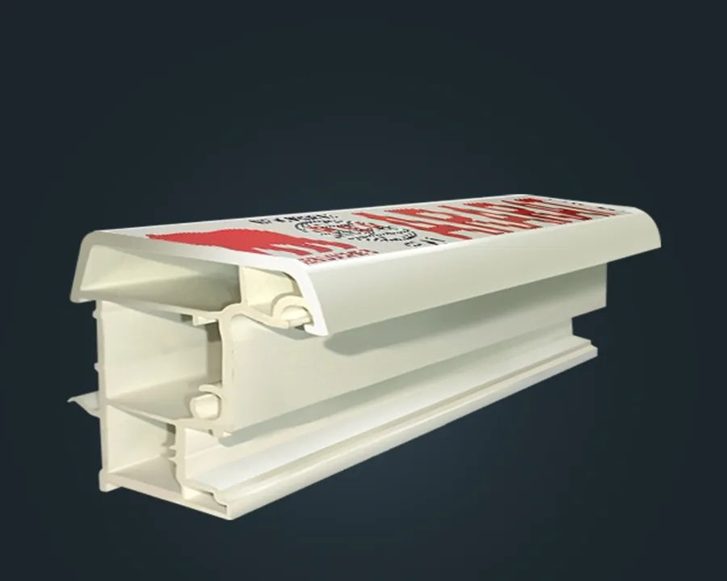


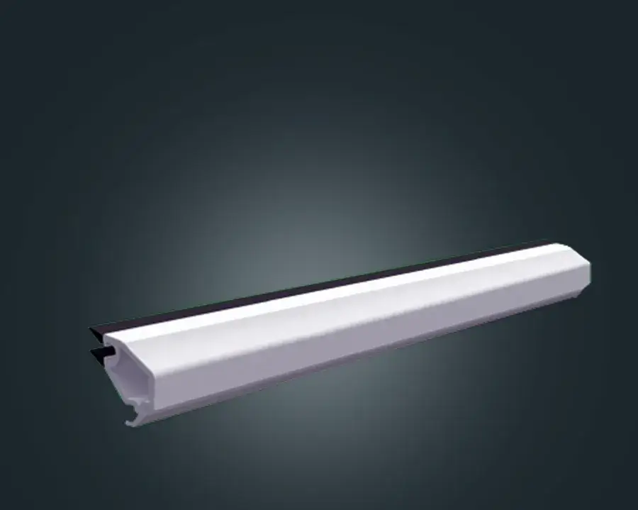


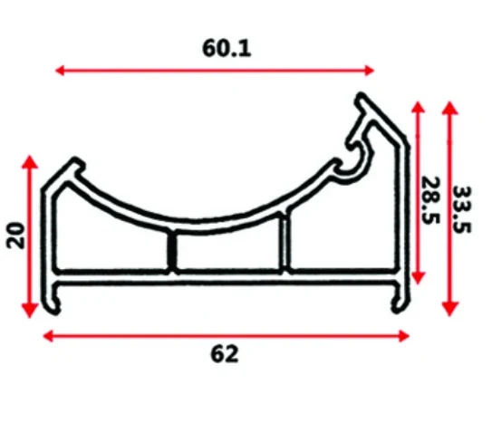

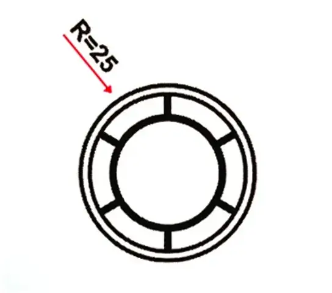
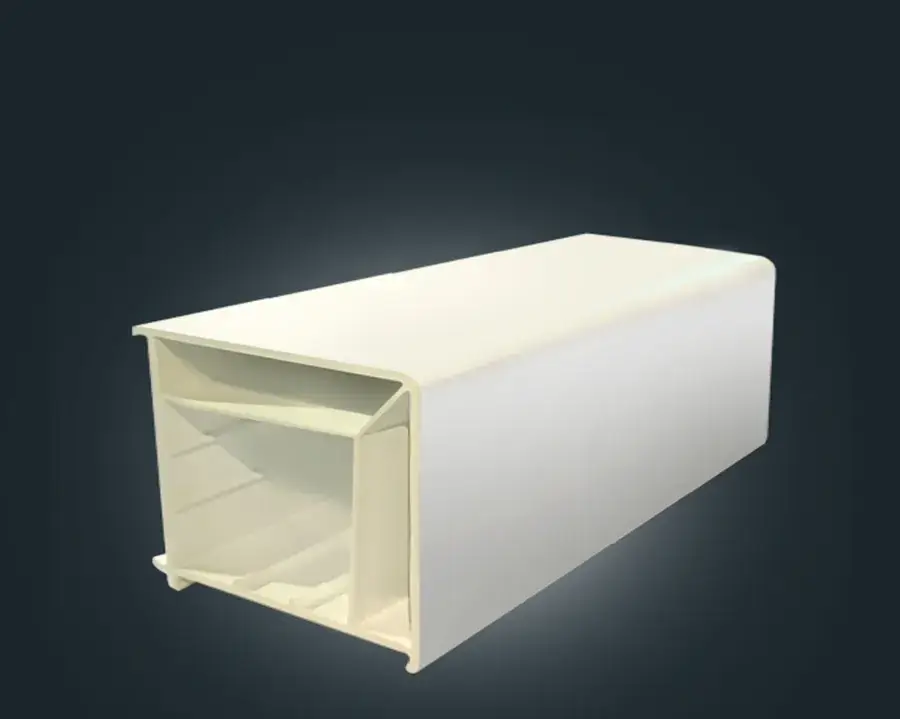
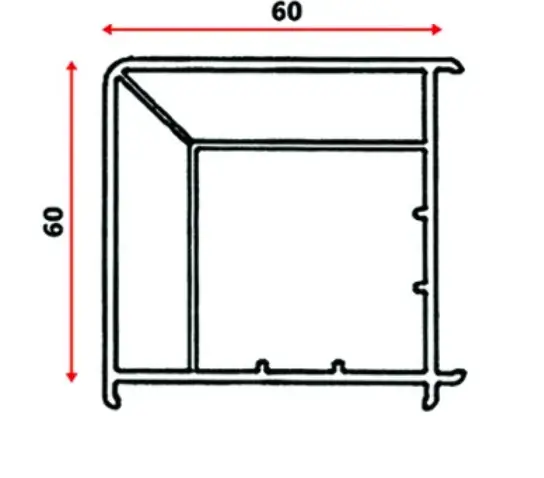
بازرسی در مراحل تولید و آزمون نمونهها
مقاوم در برابر رطوبت، گرد و غبار، UV و تغییرات دما؛
ضمانتنامه ۱۰ ساله شرکت؛ پروفیلهای آرارات و هابرمن
با کلیک روی هر مدرک، تصویر بزرگ آن باز میشود.
نقشه مقطعها، مزایای پروفیل UPVC و انواع بازشو، برای آرارات و هابرمن.
برآورد قیمت و مقدار پروفیل و شیشه پنجره، و وزن آهن و آلومینیوم.
بانک مقالات درباره پروفیل و پنجره UPVC؛ با جستجو و دستهبندی.
UPVC همان پیویسی بدون نرمکننده است؛ مادهای سخت و پایدار که پروفیلهای توخالی درب و پنجره از آن ساخته میشود.
ثابت، لولایی، فرانسوی، کشویی و گوشه ۹۰ درجه؛ هر نوع بازشو کجا مناسب است؟
دو شیشه با لایه هوا یا گاز میان آنها، بهعلاوه آببندی درست، گرما و صدا را مهار میکند. اینجا ساده توضیح دادهایم.
استاندارد ۱۲۲۹۱ مشخصات پروفیل UPVC را تعریف میکند. بدانید چه آزمونهایی دارد و چطور آن را بررسی کنید.
تمیزکاری، روغنکاری یراق، مراقبت از گسکت و نصب درست؛ سادهترین کارها برای دوام پنجره.
سازنده پنجرهاید؟ این چکلیست کمک میکند تأمینکننده پروفیل را مطمئنتر انتخاب کنید.
تهران، صادقیه
نظرآباد، البرز
@araratupvc · @huber.mann · @delwinupvc · @ada_upvc